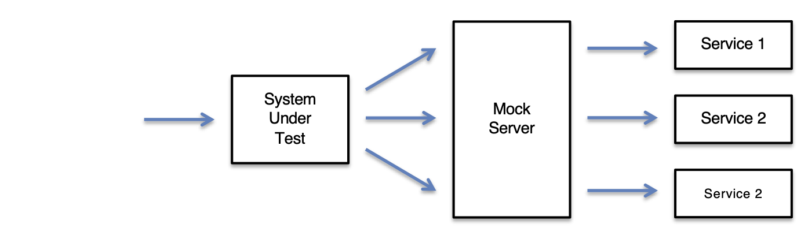
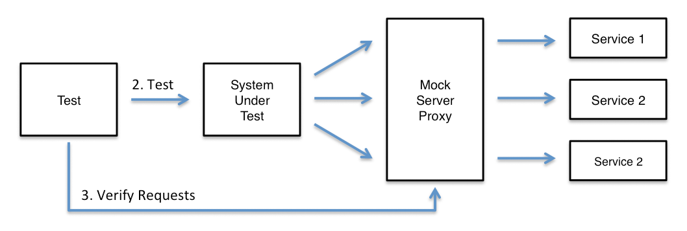

To use MockServer Proxy to analysis an existing system:

To use MockServer Proxy to verify requests:

The page on configuring clients gives full details and example code on how to configure the system being analysed.